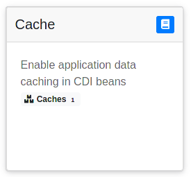

Dev UI
|
Dev UI v1
|
このガイドでは、 エクステンションの作成者向けにQuarkus Dev UIについて説明します。
Quarkusには新しい実験的なDev UIが搭載されており、devモード（ mvn quarkus:dev ）でQuarkusを起動すると、デフォルトで /q/dev-v1 に表示されます。このUIは、次のようなものを表示します:

これにより、現在ロードされているすべてのエクステンションを素早く可視化し、そのステータスを確認し、ドキュメントに直接アクセスすることができます。
その上で、各エクステンションは以下を追加することができます。
エクステンションをDev UIに対応させるにはどうすればいいですか?
エクステンションをDev UIに表示させるためには、何もする必要はありません!
だから、いつでも始めることができます :)
Dev UI概要ページのエクステンションのカードにバッジやリンクを追加したい場合は、このようにします:

deploymentエクステンションモジュールのリソースに dev-templates/embedded.html というファイルを追加する必要があります。

このファイルの内容が、エクステンションカードに含まれますので、例えば、次のようにいくつかのスタイリングとアイコンと共に2つのリンクを配置することができます:
<a href="{config:http-path('quarkus.smallrye-openapi.path')}" class="badge badge-light">
<i class="fa fa-map-signs fa-fw"></i>
OpenAPI</a>
<br>
<a href="{config:http-path('quarkus.swagger-ui.path')}/" class="badge badge-light">
<i class="fa fa-map-signs fa-fw"></i>
Swagger UI</a>| Font Awesome Freeアイコンセットを使用しています。 |
パスの指定方法に注意してください: {config:http-path('quarkus.smallrye-openapi.path')} 。これは、quarkus devコンソールが理解する特別なディレクティブで、その値を’quarkus.smallrye-openapi.path’という名前の解決済みルートに置き換えます
対応する非アプリケーションのエンドポイントは、 .routeConfigKey を使って宣言され、ルートと名前が関連付けられます。
nonApplicationRootPathBuildItem.routeBuilder()
.route(openApiConfig.path) (1)
.routeConfigKey("quarkus.smallrye-openapi.path") (2)
...
.build();| 1 | 設定されたパスが有効なルートに解決されます。 |
| 2 | そして、解決されたルートパスは、キー quarkus.smallrye-openapi.path に関連付けられます。 |
パスの考慮事項
パスというのは厄介なものです。以下の点に注意してください。
-
UIがdevエンドポイントの下に入れ子になっていることを想定してください。強い理由がない限り、これをカスタマイズする方法を提供しないでください。
-
自分で絶対パスを構築してはいけません。正規化された既知のパスにサフィックスを追加することは問題ありません。
コンソールで使用される dev エンドポイントや、上記の例で示されている SmallRye OpenAPI パスなどの設定されたパスは、 quarkus.http.root-path と quarkus.http.non-application-root-path の両方に対して適切に解決される必要があります。 NonApplicationRootPathBuildItem または HttpRootPathBuildItem を使用してエンドポイントのルートを構築し、テンプレートで使用できる解決済みのパス値を特定します。
{devRootAppend} 変数は、テンプレートでも使用することができ、例えば、静的なdev consoleリソースのURLを構築することができます:
<img src="{devRootAppend}/resources/images/quarkus_icon_rgb_reverse.svg" width="40" height="30" class="d-inline-block align-middle" alt="Quarkus"/>アプリケーション以外のルートパスの設定方法について、詳しくは Quarkus Vertx HTTP 設定リファレンス を参照してください。
テンプレートとスタイリングのサポート
embedded.html のファイルも、 /dev-templates で追加したフルページも、 Qute テンプレートエンジンによって解釈されます。
これにより、 /dev-templates/tags にテンプレートが使用する カスタムQuteタグを追加することもできます。
現在使用されているスタイルシステムは Bootstrap V4(4.6.0) ですが、将来的に変更される可能性があるので注意してください。
メインテンプレートには jQuery 3.5.1 も含まれていますが、こちらも変わるかもしれません。
設定プロパティーへのアクセス
config:property(name) 式を使用して、指定されたプロパティー名の設定値を出力することができます。プロパティー名は、文字列リテラルか、別の式で動的に取得することができます。例えば {config:property('quarkus.lambda.handler')} や {config:property(foo.propertyName)} が可能です。
注意：設定された生のパス値を取得するためには使用しないでください。上述のように、リソースパスを扱う際には、既知のルート設定キーを持つ {config:http-path(…)} を使用してください。
フルページの追加
以下のようなDev UIエクステンションにフルページを追加するには
quarkus-cache エクステンション: に対するこのページのように、エクステンションの deployment モジュールの /dev-templates リソース フォルダーに配置する必要があります。
{#include main}(1)
{#style}(2)
.custom {
color: gray;
}
{/style}
{#script} (3)
$(document).ready(function(){
$(function () {
$('[data-toggle="tooltip"]').tooltip()
});
});
{/script}
{#title}Cache{/title}(4)
{#body}(5)
<table class="table table-striped custom">
<thead class="thead-dark">
<tr>
<th scope="col">Name</th>
<th scope="col">Size</th>
</tr>
</thead>
<tbody>
{#for cacheInfo in info:cacheInfos}(6)
<tr>
<td>
{cacheInfo.name}
</td>
<td>
<form method="post"(7)
enctype="application/x-www-form-urlencoded">
<label class="form-check-label" for="clear">
{cacheInfo.size}
</label>
<input type="hidden" name="name" value="{cacheInfo.name}">
<input id="clear" type="submit"
class="btn btn-primary btn-sm" value="Clear" >
</form>
</td>
</tr>
{/for}
</tbody>
</table>
{/body}
{/include}| 1 | 他の Dev UI ページと同じスタイルを利用するには、 main テンプレートを拡張します。 |
| 2 | style テンプレートパラメーターで、ページに追加の CSS を渡すことができます。 |
| 3 | script テンプレートパラメータで、ページ用の追加JavaScriptを渡すことができます。これは、JQuery スクリプトの後にインラインで追加されるため、スクリプト内で安全に JQuery を使用することができます。 |
| 4 | title テンプレートパラメーターにページタイトルを設定することを忘れないでください。 |
| 5 | body テンプレートパラメーターには、コンテンツが含まれます。 |
| 6 | テンプレートがQuarkusエクステンションからカスタム情報を読み取るためには、 info 名前空間を使用することができます。 |
| 7 | これは インタラクティブなページ を表示します |
フルページテンプレートへのリンク
エクステンションのフルページテンプレートは、 urlbase テンプレートパラメータを使用して参照される、定義済の {devRootAppend}/{groupId}.{artifactId}/ ディレクトリの下にあります。例として、設定のデフォルトを使用すると、 /q/dev-v1/io.quarkus.quarkus-cache/ に解決されます。
embedded.html でこのフォルダを参照するには、 {urlbase} のテンプレートパラメータを使用します:
<a href="{urlbase}/caches" class="badge badge-light">(1)
<i class="fa ..."></i>
Caches <span class="badge badge-light">{info:cacheInfos.size()}</span></a>| 1 | エクステンションのフルページテンプレートを参照するには、 urlbase templateパラメータを使用します。 |
テンプレートに情報を渡す
embedded.html やフルページのテンプレートでは、エクステンションから得られる情報を表示したい場合が多いでしょう。
その情報を利用可能にするには、ビルドタイムに利用可能か、ランタイムに利用可能かによって、2つの方法があります。
どちらの場合も、 {pkg}.deployment.devconsole パッケージの Dev UI のサポートを、 DevConsoleProcessor クラス (エクステンションの deploymentモジュール)に追加することをお勧めします。
実行時情報を渡す
package io.quarkus.cache.deployment.devconsole;
import io.quarkus.cache.runtime.CaffeineCacheSupplier;
import io.quarkus.deployment.IsDevelopment;
import io.quarkus.deployment.annotations.BuildStep;
import io.quarkus.devconsole.spi.DevConsoleRuntimeTemplateInfoBuildItem;
public class DevConsoleProcessor {
@BuildStep(onlyIf = IsDevelopment.class)(1)
public DevConsoleRuntimeTemplateInfoBuildItem collectBeanInfo() {
return new DevConsoleRuntimeTemplateInfoBuildItem("cacheInfos",
new CaffeineCacheSupplier());(2)
}
}| 1 | この ビルドステップでは、devモードであることを条件とすることを忘れないでください。 |
| 2 | 実行時 dev info:cacheInfos テンプレート値を宣言します。 |
これにより、 エクステンションの runtime module で info:cacheInfos の値が、このサプライヤーにマッピングされます。
package io.quarkus.cache.runtime;
import java.util.ArrayList;
import java.util.Collection;
import java.util.Comparator;
import java.util.List;
import java.util.function.Supplier;
import io.quarkus.arc.Arc;
import io.quarkus.cache.CaffeineCache;
public class CaffeineCacheSupplier implements Supplier<Collection<CaffeineCache>> {
@Override
public List<CaffeineCache> get() {
List<CaffeineCache> allCaches = new ArrayList<>(allCaches());
allCaches.sort(Comparator.comparing(CaffeineCache::getName));
return allCaches;
}
public static Collection<CaffeineCache> allCaches() {
// Get it from ArC at run-time
return (Collection<CaffeineCache>) (Collection)
Arc.container().instance(CacheManagerImpl.class).get().getAllCaches();
}
}ビルド時情報を渡す
ビルド時の情報だけをテンプレートに渡す必要がある場合もあります。その場合、このようにすることができます:
package io.quarkus.qute.deployment.devconsole;
import java.util.List;
import io.quarkus.deployment.IsDevelopment;
import io.quarkus.deployment.annotations.BuildStep;
import io.quarkus.devconsole.spi.DevConsoleTemplateInfoBuildItem;
import io.quarkus.qute.deployment.CheckedTemplateBuildItem;
import io.quarkus.qute.deployment.TemplateVariantsBuildItem;
public class DevConsoleProcessor {
@BuildStep(onlyIf = IsDevelopment.class)
public DevConsoleTemplateInfoBuildItem collectBeanInfo(
List<CheckedTemplateBuildItem> checkedTemplates,(1)
TemplateVariantsBuildItem variants) {
DevQuteInfos quteInfos = new DevQuteInfos();
for (CheckedTemplateBuildItem checkedTemplate : checkedTemplates) {
DevQuteTemplateInfo templateInfo =
new DevQuteTemplateInfo(checkedTemplate.templateId,
variants.getVariants().get(checkedTemplate.templateId),
checkedTemplate.bindings);
quteInfos.addQuteTemplateInfo(templateInfo);
}
return new DevConsoleTemplateInfoBuildItem("devQuteInfos", quteInfos);(2)
}
}| 1 | 必要な依存関係を入力として使用します。 |
| 2 | ビルド時 info:devQuteInfos DEVテンプレート値を宣言します。 |
高度な使用法:アクションの追加
Dev UI テンプレートにアクションを追加することもできます。

これは、別の ビルドステップを追加して、アクションをエクステンションの deploymentモジュールでアクションを宣言することで実現可能です。
package io.quarkus.cache.deployment.devconsole;
import static io.quarkus.deployment.annotations.ExecutionTime.STATIC_INIT;
import io.quarkus.cache.runtime.devconsole.CacheDevConsoleRecorder;
import io.quarkus.deployment.annotations.BuildStep;
import io.quarkus.deployment.annotations.Record;
import io.quarkus.devconsole.spi.DevConsoleRouteBuildItem;
public class DevConsoleProcessor {
@BuildStep
@Record(value = STATIC_INIT, optional = true)(1)
DevConsoleRouteBuildItem invokeEndpoint(CacheDevConsoleRecorder recorder) {
return new DevConsoleRouteBuildItem("caches", "POST",
recorder.clearCacheHandler());(2)
}
}| 1 | レコーダーをオプションとしてマークし、開発モードの時にのみ起動されるようにします。 |
| 2 | 与えられたハンドラーによって処理される POST {urlbase}/caches ルートを宣言します。 |
注： このアクションを呼び出す方法はあなたのフルページ で確認することができます。
あとは、エクステンションの runtime module でレコーダーを実装するだけです:
package io.quarkus.cache.runtime.devconsole;
import io.quarkus.cache.CaffeineCache;
import io.quarkus.cache.runtime.CaffeineCacheSupplier;
import io.quarkus.runtime.annotations.Recorder;
import io.quarkus.devconsole.runtime.spi.DevConsolePostHandler;
import io.quarkus.vertx.http.runtime.devmode.devconsole.FlashScopeUtil.FlashMessageStatus;
import io.vertx.core.Handler;
import io.vertx.core.MultiMap;
import io.vertx.ext.web.RoutingContext;
@Recorder
public class CacheDevConsoleRecorder {
public Handler<RoutingContext> clearCacheHandler() {
return new DevConsolePostHandler() {(1)
@Override
protected void handlePost(RoutingContext event, MultiMap form) (2)
throws Exception {
String cacheName = form.get("name");
for (CaffeineCache cache : CaffeineCacheSupplier.allCaches()) {
if (cache.getName().equals(cacheName)) {
cache.invalidateAll();
flashMessage(event, "Cache for " + cacheName + " cleared");(3)
return;
}
}
flashMessage(event, "Cache for " + cacheName + " not found",
FlashMessageStatus.ERROR);(4)
}
};
}
}| 1 | どのVert.x ハンドラーでも 使用することができますが、 DevConsolePostHandler スーパークラスは POST アクションをうまく処理し、最適な動作を実現するために POST の直後に GET URI に自動リダイレクトします。 |
| 2 | Vert.x RoutingContext の他、 form のコンテンツも入手できます。 |
| 3 | すべてがうまくいったことを知らせるために、ユーザーにメッセージを追加することを忘れないでください。 |
| 4 | エラーメッセージを追加することもできます。 |
フラッシュメッセージは main DEV テンプレートで処理され、ユーザーへの素敵な通知になります。
|